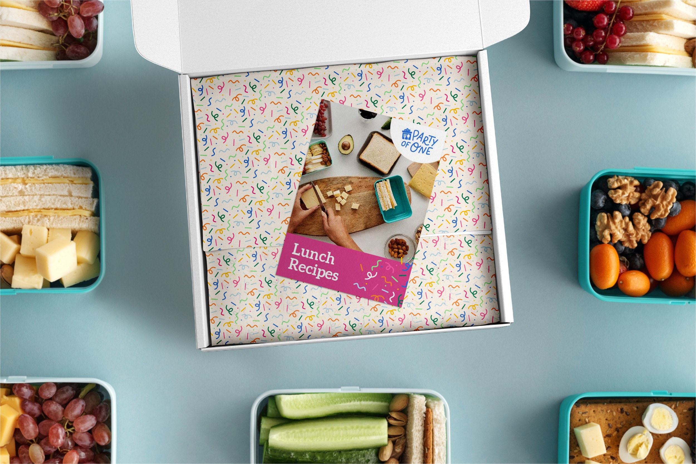

Party for One is a new meal kit service that celebrates dining alone by providing a variety of flavorful meals delivered to your doorstep. Each kit is affordably priced and packaged sustainably. Every ingredient is tied in a neat little bow making cooking a more enjoyable and fun experience.

The name “Party of One” was chosen to acknowledge the act of solo dining while implying a sense of joy and excitement. The logo reflects those concepts through a playful and fun custom script. The gift box icon speaks to the idea of treating oneself and the concept of enjoying the act of cooking for one’s self.
Vibrant colors reflect celebration with a set of blue and pink as primary colors. Light counterparts serve as compliments to add variety and depth with orange, yellow, and greens used sparingly as campaign colors and as part of the primary confetti pattern.
The second part of this project involved a single page website design. Firstly, the webpage provides a concise breakdown of the ordering and delivery process, ensuring potential customers understand the ease and efficiency of Party of One. Additionally, the webpage offers a glimpse of the various meal options available, enticing visitors with appetizing images and a clear breakdown of different price plans. Party of One’s commitment to zero waste is highlighted through a dedicated section, emphasizing their eco-friendly approach. To further build trust and showcase customer satisfaction, the website includes a section featuring frequently asked questions and testimonials from happy customers.

{kind=link}
{kind=link}
{kind=link}
{kind=link}